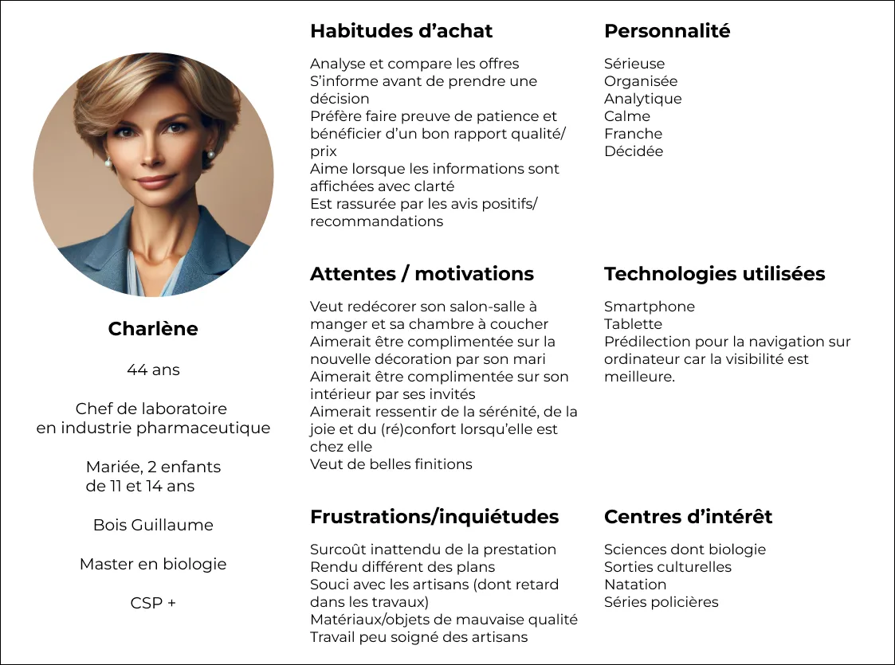
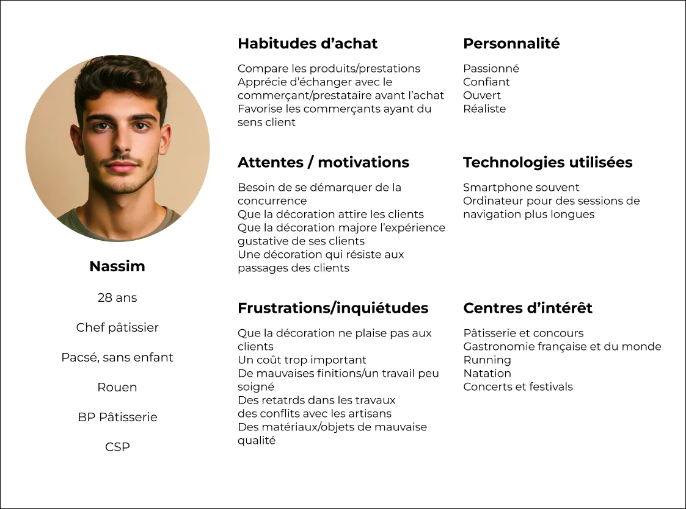

Ce projet est un projet fictif, réalisé dans le cadre de la validation d'un bloc de compétences. Il s'agit d'un projet réalisé en groupe.
En voici le sujet : Sophie Michue, décoratrice d'intérieur, souhaite que soit créé un site e-commerce lui permettant de vendre ses prestations auprès d'un public de particuliers et d'entreprises.
Elle a besoin, en complément de la partie e-commerce qui devra être associée à un calendrier (réservation d'un créneau horaire pour la prestation), d'une partie blog et d'un portoflio.
Processus
Recueil du besoin client
Maquettage du site e-commerce
Création du site e-commerce WordPress
Paramétrage du site e-commerce et de ses extensions
Recueil du besoin client
Les échanges avec la cliente (fictive) ont permis de mettre en lumière des besoins complémentaires à la demande initiale :
création d'une partie blog,
création d'un portfolio,
correction des tarifs,
processus pour passer commande.
Cet échange avait été préparé en amont en équipe afin d'identifier les points à questionner lors de l'entretien. Cette préparation a permis d'obtenir l'ensemble des informations
nécessaires à la bonne exécution du projet.
Maquettage du site e-commerce
Après avoir identifié l'ensemble des pages à concevoir, nous avons rédigé des personas puis créé une charte graphique avant de maquetter l'ensemble du site.
1 / Rédaction de deux personas
Deux personas ont été créés afin de mieux cerner les problématiques et attentes des futurs clients de Sophie Michue. Cette dernière souhaitait en effet proposer des prestations de décoration d'intérieur
à destination d'une clientèle de particuliers mais également de professionnels.
Persona d'un client particulierPersona d'un client professionel
2 / Création de la charte graphique
Les échanges avec la cliente (fictive) ont permis d'identifier des éléments-clés pour la création de la charte graphique : elle a besoin d'un logo, apprécie les couleurs bleu et vert mais pas le rouge, aime ce qui est "élégant,
un peu rond, qui transmet l'idée du luxe, de bien-être et d'espace".
A partir de ces éléments, la charte suivante a été imaginée :


{kind=link}
{kind=link}